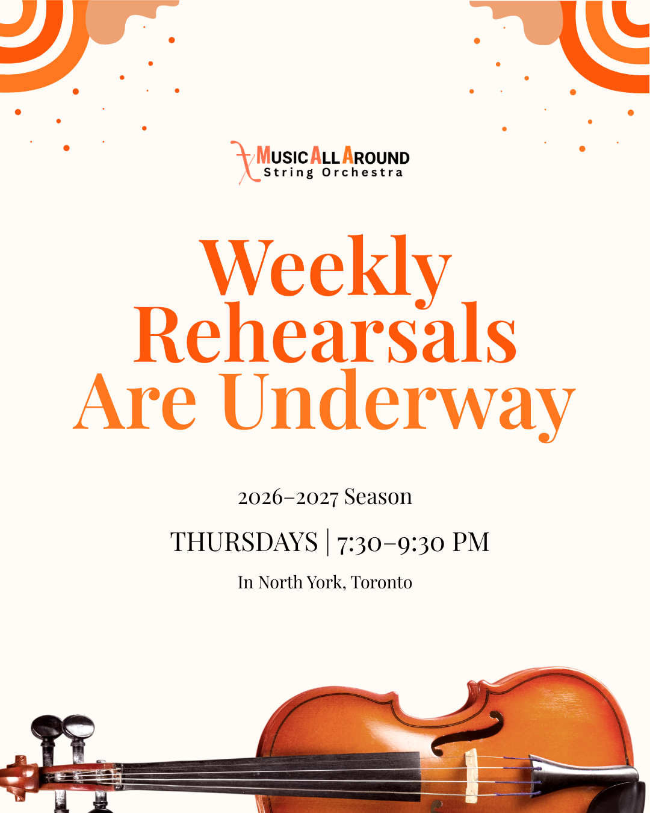
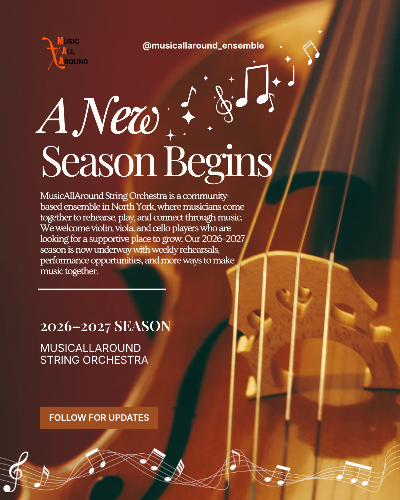
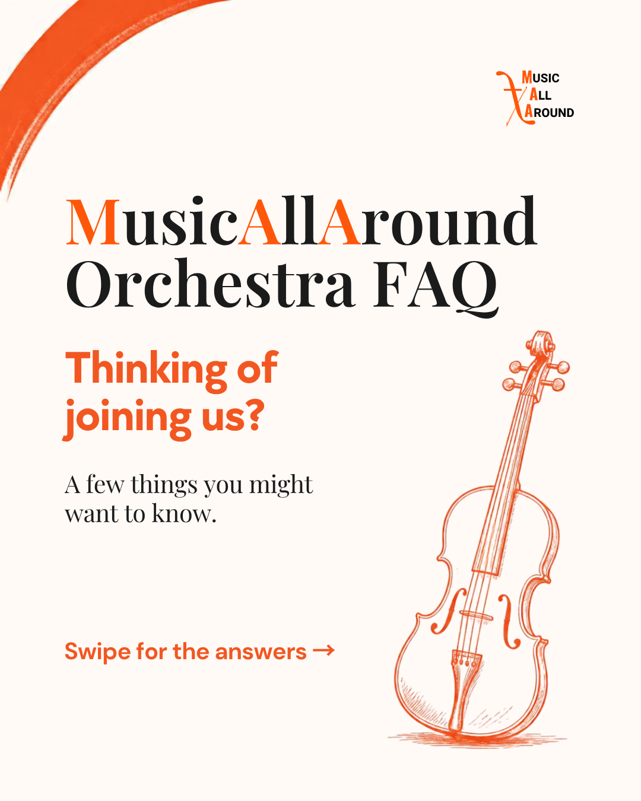

Project overview
This series includes a rehearsal announcement, a new season introduction, and an FAQ cover for MusicAllAround String Orchestra.
Design challenge
The challenge was to make each message clear while keeping a consistent musical theme across the three designs.
Design approach
Warm colours, large headings, and images of string instruments connect the designs. Each poster uses a different layout to suit its message.
Weekly Rehearsals
Orange text highlights the main announcement, while the light background keeps the rehearsal details easy to find.

A New Season Begins
A close-up instrument photograph creates a warm background. White text introduces the season and the orchestra.

Orchestra FAQ
A simple heading and violin illustration introduce an FAQ carousel for people interested in joining the orchestra.

Outcome
The three pieces use different compositions while sharing warm colours and a musical theme.
Back to selected work